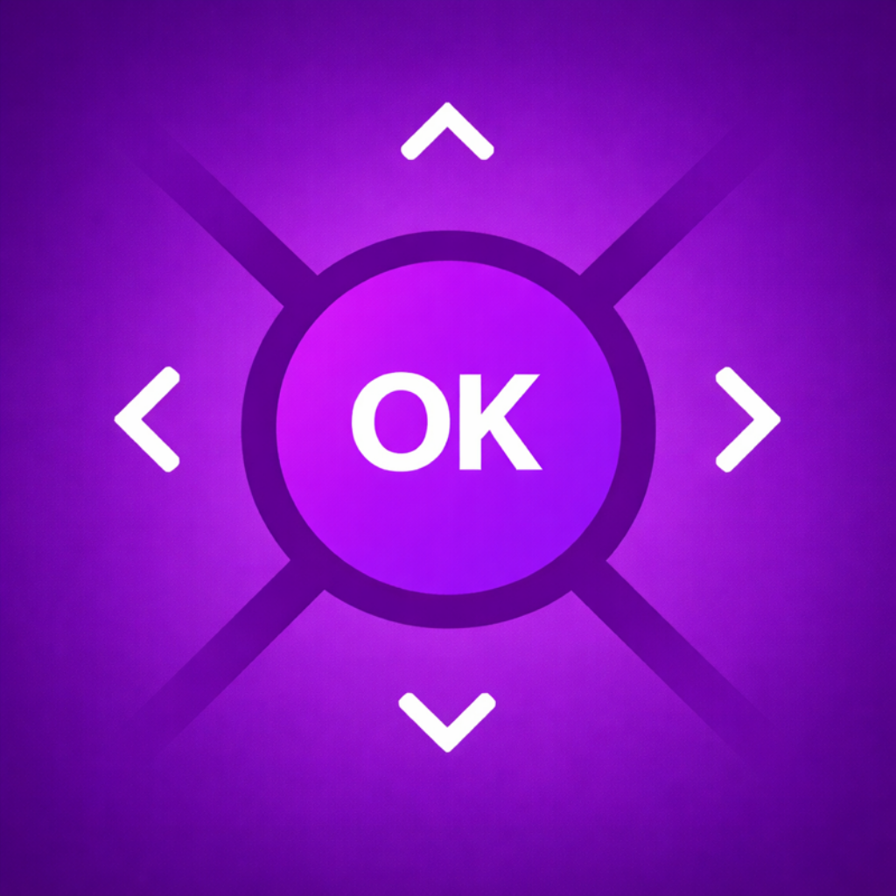
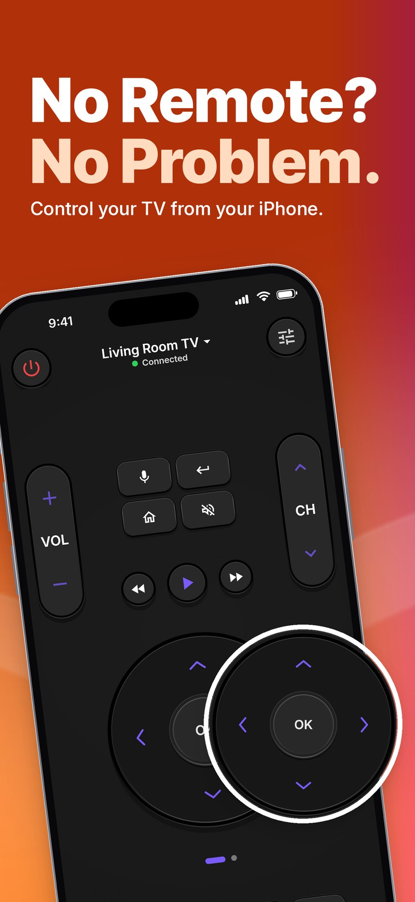
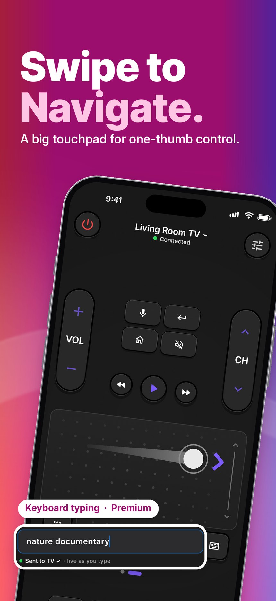
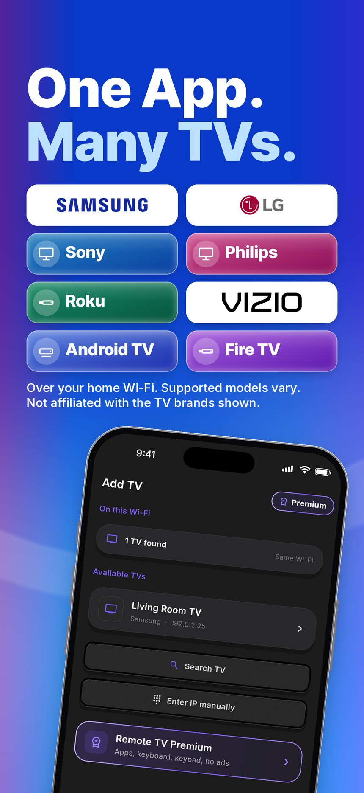
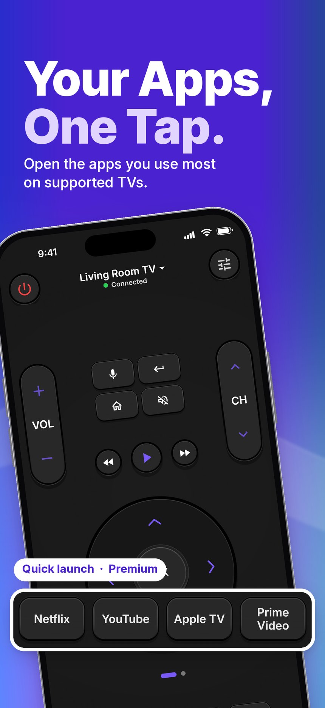
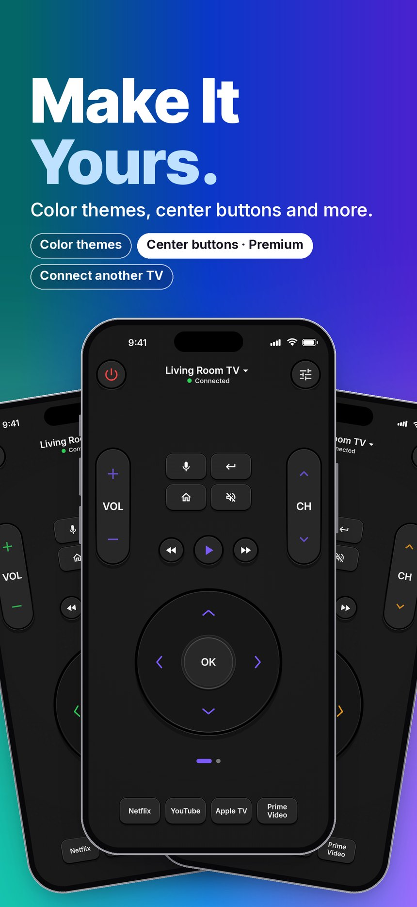

Essential keys
D-pad, OK, Home, Back, volume, mute, and power.

Roku, Samsung, LG & more
Turn your iPhone into a Wi-Fi remote for the smart TVs already on your home network.
No extra hardware, no cloud account, and no infrared blaster — just local control that feels like the remote you lost in the couch.





The core remote is free, with ads. Commands stay on your local network, and Remote TV does not require you to create an account.
D-pad, OK, Home, Back, volume, mute, and power.
Home Screen widget and Lock Screen Live Activity for the keys you use most.
Switch between several TVs in one app.
A large touchpad for menus and playback.
Type search and PIN codes from your iPhone keyboard.
Launch Netflix, YouTube, Disney+, Prime Video, Hulu, and Apple TV. Streaming-app quick launch is not available on VIZIO TVs.
Works over local Wi-Fi with the TVs listed in the App Store listing. Available keys depend on the TV model and firmware.
Wi-Fi only — this app does not use infrared (IR).
Join the same Wi-Fi network as your TV, allow Local Network access when iOS asks, then let Remote TV find compatible TVs automatically. Confirm pairing on the TV if it shows a prompt or code.
Remote TV works over local Wi-Fi with Samsung (Tizen), LG (webOS), VIZIO (SmartCast), Roku and Roku TV, Sony, Philips, and Android TV / Google TV / Fire TV. For Philips, pair with the 4-digit PIN or 6-character code shown on the TV. Available keys depend on the TV model and firmware.
No. It is Wi-Fi only — this app does not use infrared (IR).
No. Remote TV does not require you to create an account. Commands stay on your local network.
The core remote is free, with ads. Premium removes ads and unlocks keypad/keyboard, streaming-app shortcuts, and extra customization. You can also buy Remove Ads as a one-time purchase.
Streaming-app quick launch is not available on VIZIO TVs.
Manage or cancel anytime in Settings → Apple ID → Subscriptions. Premium is offered as an auto-renewing weekly or yearly subscription. Payment is charged to your Apple ID at confirmation of purchase. Subscriptions renew automatically unless auto-renew is turned off at least 24 hours before the end of the current period.
Need help connecting a TV or have a question about the app? Email us and we’ll help.
Contact: appsinsights@gmail.com
Privacy Policy: wearefaces.github.io/privacy/remotetv